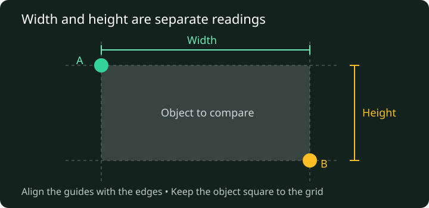
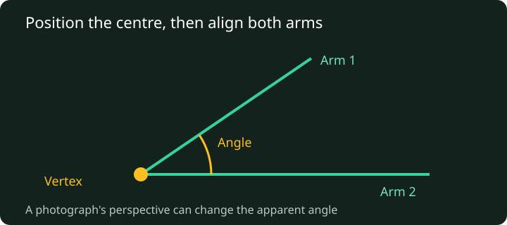
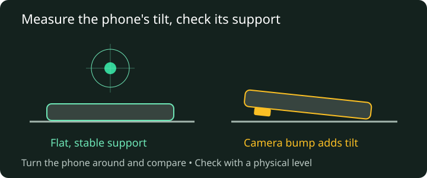

Measure with the screen in your hand
Start with a known length, then choose the tool that suits what you need to measure. Screen Ruler works without an account.
The starting scale is approximate. A detected phone model or a saved preset is a starting point, not proof of accuracy. Check your scale against a physical ruler before measuring real objects.
1. Set up your screen
- Open the ruler and select Choose device. Search for your exact model, including its size variant. Select Done, or choose Manual Calibration if your model is missing.
- Open the settings cog and select Calibrate. Compare the screen marks with a physical ruler. Adjust Ruler Scale until the marks agree. Use the numeric fields for a finer adjustment.
- Check a second length and the other screen direction. A short reference can hide an error that becomes obvious across a longer span.
- Select Measure fullscreen to clear the introduction. The settings cog stays available; Help & calibration brings the introduction back.
The chosen scale is saved in this browser when browser storage is available. Changing browsers, clearing site data or moving a desktop window to another monitor can mean you need to calibrate again. The calibration guide explains the checks in more detail.
2. Measure width and height with the calipers
Use the green and amber handles to place two reference points. Drag a handle or its guide to align with the edge you want to measure. For a width, align the vertical guides with the object's left and right edges. For a height, align the horizontal guides with its top and bottom.

For example, to compare the width of a small rectangular label, keep it straight relative to the screen grid and align the two vertical guides with its edges. View the screen straight on: looking from the side can shift the apparent alignment because the object sits above the display.
Choose the unit order and inch format in settings. Changing between millimetres and inches changes the display format; it does not repair an incorrect physical scale. Rounded fractions can also conceal a small difference, so use a finer readout when comparing two close sizes.
Keep hard or sharp objects off the display. A protective layer can introduce additional alignment error. For an object larger than the usable screen, use a physical measuring tool rather than adding several uncertain screen measurements.
3. Compare an angle with the protractor
Open Tools and enable the protractor. Position the object so its angle's vertex lines up with the protractor's fixed centre, then drag the green and amber handles to align the arms with the edges. Read the A-B angle after both arms are positioned.

The protractor compares directions on the flat display. It does not automatically detect edges or correct perspective in a photograph. A tilted photo of a square can show an apparent angle that is not a right angle. Use a straight-on view, or measure the original object with a physical protractor.
A uniform scale adjustment changes lengths but not the angle between the arms. Placement still matters: a small error near the vertex can noticeably change the result, so align along as much of each edge as you can see.
4. Check tilt with the bubble level
On a supported phone or tablet, enable Bubble Level in Tools. Your browser may ask for access to motion or orientation sensors. Allow that request if you want to use the level. The ordinary ruler and protractor do not need this permission.
Place the phone steadily on the surface you are checking and wait for the reading to settle. A centred bubble indicates the app's level reference. A camera bump or uneven case can tilt the phone even when the surface underneath is level; use a flat supporting face and avoid rocking the device.

Check the same spot again after turning the phone around on the surface. If the results disagree, suspect the phone's support or sensor offset and compare with a physical spirit level. Some desktop browsers have no orientation sensor. A centred preview without live sensor readings is not a measurement; check that the reading responds when you gently tilt the device.
When something does not look right
The ruler is too large or too small
Check the selected model and screen diagonal first. Reset browser zoom to its usual setting, then calibrate against a known length. On a desktop, keep the browser on the monitor used during calibration. Recheck after a change to display scaling or orientation.
My phone is not in the device list
Use Manual Calibration. You can also try the optional Online Device Match when it is available, but a network result still needs checking against a reference. Do not select a similar-looking phone and assume its display size is identical.
The ruler loads, but online matching or ads do not
Those services need a network connection and may be blocked by a browser extension. Measuring and manual calibration do not depend on them after the page has loaded. You do not need to enable ads to use the ruler.
The measuring interface does not load
Reload the page and check that JavaScript is enabled. If a script or stylesheet cannot load, the introduction and these guides remain available. Try a current browser and send a reproducible problem report if it persists.
What about the camera-based Big Ruler?
Big Ruler is a separate, experimental mode that needs a compatible WebXR browser and camera permission. It estimates distances in a tracked scene; it does not use the same physical screen calibration as the on-screen ruler. Tracking, lighting and the surface can affect its result. Compare it with a known distance before relying on it.
Return to the ruler · Read the accuracy and calibration guide